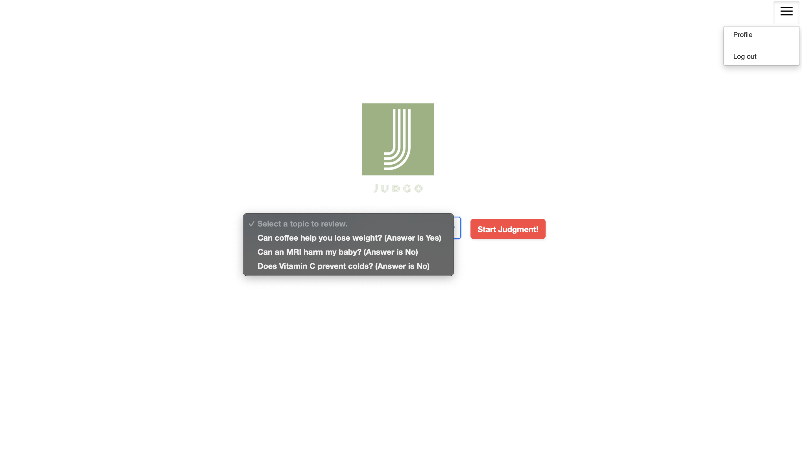
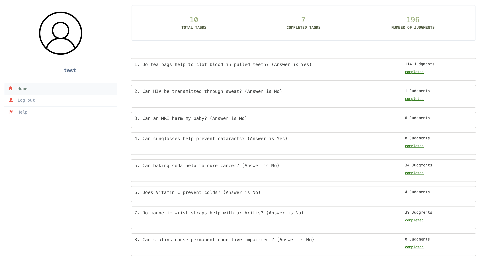

Open your web browser and go to the URL [http://0.0.0.0:8000/)] of your judgo application.
Enter your superuser credentials (username and password) that you set during the setup process (The default username and password is `admin`). Click the "Sign in" button. If the login is successful, you will be redirected to the main admin page, where you can manage the content and users of your judgo application.
As an administrator, you have full access to all topics, documents, and tasks. This allows you to manage the content and users. Here are some of the key functions you can perform in the JUDGO admin interface:
Before a reviewer can log into the system, an administrator must first create a user account for them and provide them with a username and password. Once the reviewer has this information, they can use it to log into the system. Once logged in, they will be redirected to the home page.
On this page, they will see a list of topics that have been assigned to them. Additionally, there will be a menu containing options for their profile and to log out. By selecting a topic and clicking on `start judgment`, they will be able to perform the preference judgment task.

In the profile page, the reviewer can view a list of all tasks that have been assigned to them, along with their current status. The reviewer can see the number of total tasks assigned, the number of tasks that have been completed, and the total number of judgments they have made. This information allows the reviewer to track their progress and better manage their workload.

After selecting a topic in the home page, the reviewer can start the judgment process. A full demonstration of the judgment process is provided to show the available features and how to use them to their advantage. This demonstration is a valuable resource for reviewers to understand the process and how to effectively use the system to make informed decisions.